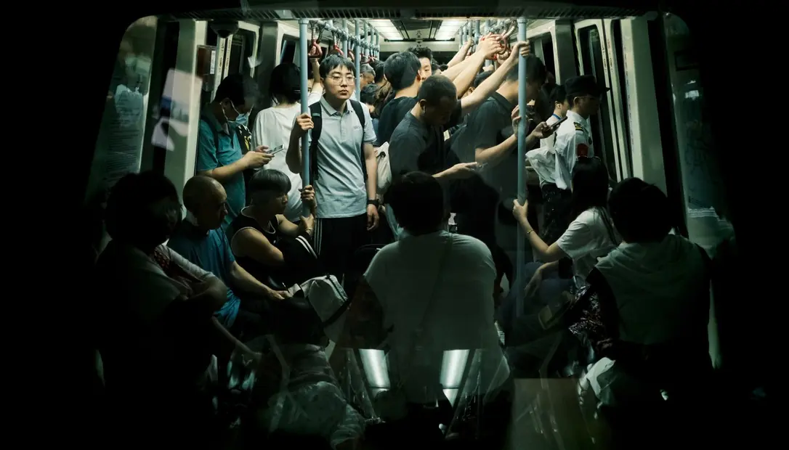
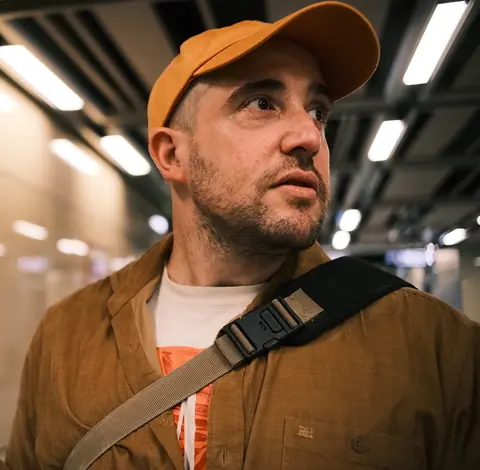

Shande Villa. Fotografía de calle en China
Desde 2008 en China fotografiando lo que quizá no exista dentro de diez años.
Redes
En China
Contacto
Para colaboraciones con marcas, prints o cualquier otra consulta, utiliza el formulario de contacto. Te respondo yo.